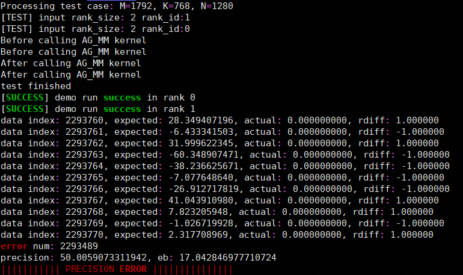
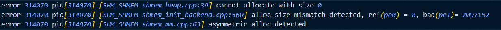
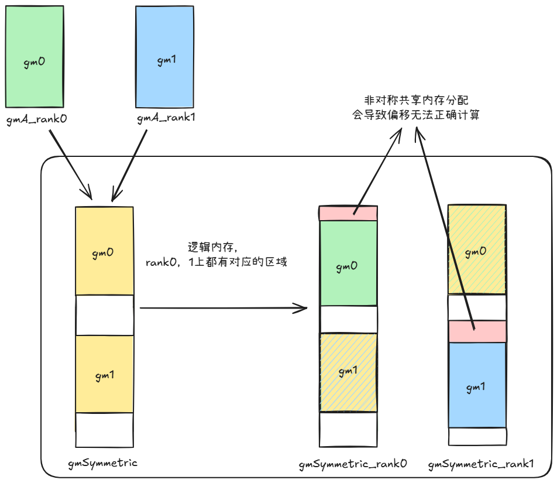
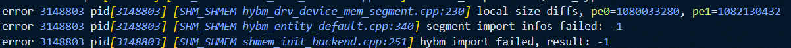
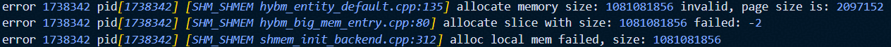
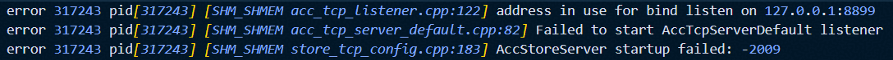
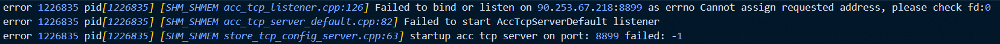
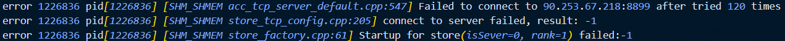
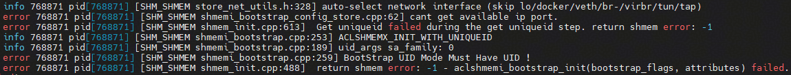

SHMEM 使用限制
GM2GM的highlevel RMA操作使用默认buffer，不支持并发操作，否则可能造成数据覆盖。若有并发需求，建议使用lowlevel接口。
barrier接口当前必须在Mix Kernel（包含mmad和GM2UB/UB2GM操作）中使用，可参考example样例。该限制待编译器更新后移除。
使用RDMA的高阶接口前，需要先使用
aclshmemx_rdma_config接口配置UB Buffer和sync_id等信息。若不配置，则使用默认的190KB处的UB Buffer和EVENT_ID0作为接口内部的同步EVENT_ID。RDMA相关接口内部使用PipeBarrier<PIPE_MTE3>阻塞MTE3流水以确保RDMA任务下发完成。使用SDMA的高阶接口前，需要先使用
aclshmemx_sdma_config接口配置UB Buffer和sync_id等信息，且需要保证预留UB Buffer大小大于等于64字节。若不配置，则使用默认的191KB处的UB Buffer和EVENT_ID0作为接口内部的同步EVENT_ID。910B 16卡机型：NPU分为前八卡后八卡两个8P Fullmesh组，每个8P组内通过HCCS总线完成两两互联，两个8P Fullmesh组之间通过PCIe-SW完成互连，因此不支持直接使用MTE接口在跨组NPU间完成数据搬运。部分example用例使用MTE搬运接口，单机用例请勿跨组指定NPU，以防发生未知报错（如流同步失败等）。
910C D2H/D2rH等功能，需要确保Host内存（DRAM）可用空间大于aclshmemx_init_attr_t初始化过程中pe分配的local_mem_size大小。因为HCCS总线上DRAM地址范围是固定的，部分环境上并不是所有DRAM都在HCCS固定的总线地址范围内，只有和HCCS总线固定的地址交集部分才是可用的DRAM空间。确认DRAM可用空间方法：通过lsmem查询本机物理地址范围，和如下4个地址区间取交集（0x29580000000-0x34000000000， 0xa9580000000-0xb4000000000， 0x129580000000-0x134000000000， 0x1a9580000000-0x1b4000000000），得到具体可用的DRAM容量。如果没有交集，表示当前没有可用DRAM空间或可用空间小于配置的local_mem_size，则不支持该功能。
SHMEM 常见问题
内存分配相关问题
aclshmem_malloc多卡分配非对称共享内存
Q: 算子精度问题，无error日志，发现共享内存访问到的数据异常;

错误示例代码:
以example目录下的allgather_matmul为例，以下为非对称共享内存分配分配的简单示例场景：
// Inappropriate calling of aclshmem_malloc
void *symmTest = nullptr;
symmTest = aclshmem_malloc(((rank_id + 1) * 1024 * 1024) * sizeof(__fp16));
void *symmPtr = aclshmem_malloc((204 * 1024 * 1024) * sizeof(__fp16));
uint8_t *gmSymmetric = (uint8_t *)symmPtr;
... ...
aclshmem_free(symmPtr);
if (symmTest != nullptr) {
aclshmem_free(symmTest);
}
A: 可使用debug模式排查共享内存分配对称性问题
debug模式开启方法：在代码仓根目录下执行：bash scripts/build.sh -examples -debug
此时执行代码获得如下报错，确认错误为使用aclshmem_malloc接口分配了非对称的共享内存

错误原因分析示意图:
修正方式: 确保每个rank分配相同大小的共享内存

aclshmemx_set_attr_uniqueid_args对每个pe设置了不同的local_mem_size
Q: 提示local size diffs
错误调用代码片段:
aclshmemx_init_attr_t attributes;
aclshmemx_uniqueid_t uid = ACLSHMEM_UNIQUEID_INITIALIZER;
int64_t local_mem_size = (1024 + pe * 2) * 1024 * 1024;
if (pe == 0) {
status = aclshmemx_get_uniqueid(&uid);
}
MPI_Bcast(&uid, sizeof(aclshmemx_uniqueid_t), MPI_UINT8_T, 0, MPI_COMM_WORLD);
status = aclshmemx_set_attr_uniqueid_args(pe, pe_size, local_mem_size, &uid, &attributes);
status = aclshmemx_init_attr(ACLSHMEMX_INIT_WITH_UNIQUEID, &attributes);
错误日志:

注意:
日志中显示的实际分配大小和local_mem_size大小有
6MB的差异为shmem框架内部使用空间此处
local_mem_size大小为2MB对齐，若尝试分配其他大小如1025 * 1024 * 1024可能会出现不同的错误信息:

A: 应保证aclshmemx_init_attr_t初始化过程中每pe分配的local_mem_size大小一致
IP/PORT配置相关问题
绑定端口被占用
Q: 尝试使用的ip/port已被占用，错误日志如图:
端口被占用错误日志:

ip不可用错误日志1:

ip不可用错误日志2:

A: 逐步排查ip及端口可用情况
确认ip是否符合预期
检查端口是否被占用，
netstat -tuln | grep <端口号>调整环境变量
SHMEM_UID_SESSION_ID及实际执行文件所使用的ip及端口号
未通过环境变量配置ip/port，使用默认eth查询ip信息失败
Q: SHMEM_UID_SESSION_ID和SHMEM_UID_SOCK_IFNAM均未配置时使用eth:inet4查询本地ip地址，查询失败时错误日志如下:

A: 应手动配置SHMEM_UID_SESSION_ID或SHMEM_UID_SOCK_IFNAM
配置示例:
SHMEM_UID_SESSION_ID:
SHMEM_UID_SESSION_ID=127.0.0.1:1234SHMEM_UID_SOCK_IFNAM:
SHMEM_UID_SOCK_IFNAM=[6666:6666:6666:6666:6666:6666:6666:6666]:886SHMEM_UID_SOCK_IFNAM=enpxxxx:inet4取ipv4SHMEM_UID_SOCK_IFNAM=enpxxxx:inet6取ipv6
注意: 同时配置时只读取SHMEM_UID_SESSION_ID